Volker Steinhage: Selected current and closed projects:
| 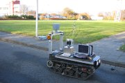 | 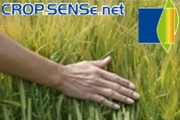 |
| 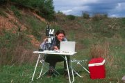 | 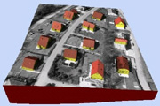 | 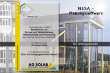 |
| Home | News | Teaching | Projects | Publications | Team |
| 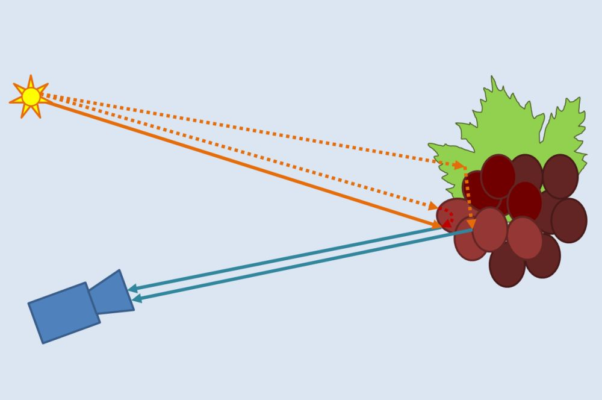 | Computational Sensing with Applications to Plant Breeding
Funding: Inst. of Comp. Science, Bonn Univ., 2017 - 2019
Aim: Exploiting direct and global illumination components for plant phenotyping.
Role: Principal investigator together with
Prof. Dr. Matthias Hullin
Methods: Illumination Control, Subsurface Scattering, Image Decomposition and Manipulation, Object Recognition, ConvNets
Partners: Inst. of Computer Science II, Bonn Univ..
|
| 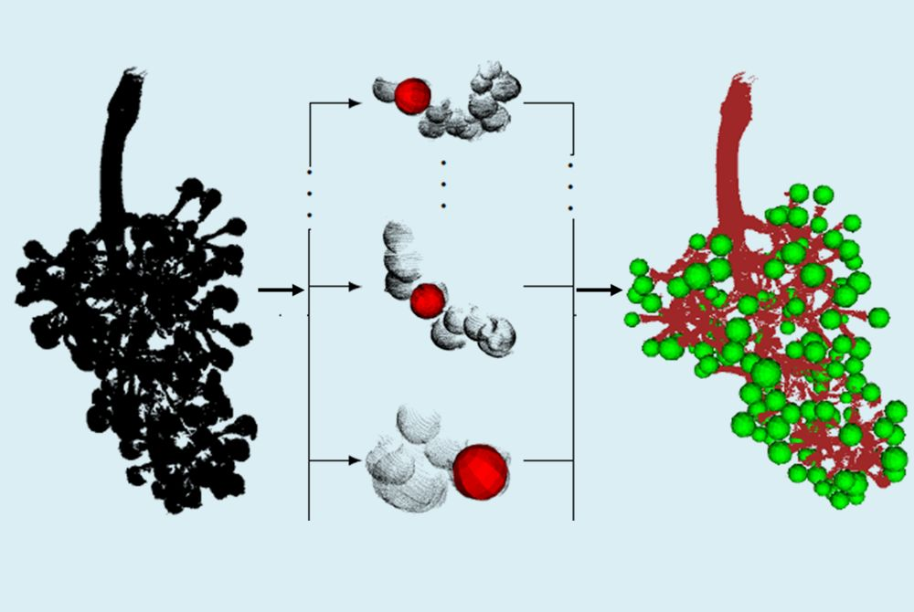 | Automated Evaluation and Comparision of Grape Genotypes with respect to Cluster Architecture
Funding:
German Research Council (DFG), 2016 - 2019
Aim: QTL mapping, marker development and identification of candidate genes for important traits to
achieve Botrytis resilience. Automated model-based high-throughput phenotyping
of cluster architecture traits using high-resolution optical 3D scanning data.
Role: Principal investigator of the modeling subgroup: interpretation of sensor data, pattern
recognition, classification
Methods: Procedural Modeling, L-Systems, Relational Growth Grammars, CSG, Probabilistic Sampling
Partners:
Julius Kühn Institute of Grapevine Breeding, Siebeldingen (Prof. Dr. R. Töpfer),
.
|
| 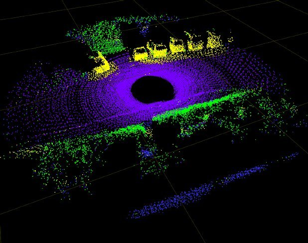 | Object Classification in 3D Laser Range Data
Funding: Fraunhofer Gesellschaft (FhG), 2008 - 2015
Aim: Object Classification in 3D Laser Range Data of Dynamic Scenes
Role: Principal investigator together with Prof. Dr. A. B. Cremers
Methods: range data segmentation, feature selection,
logistic regression, spectral hashing
Partners:
Fraunhofer Institute for Communication, Information Processing and Ergonomics (FKIE),
Prof. Dr. P. Martini, Dr. D. Schulz
|
| 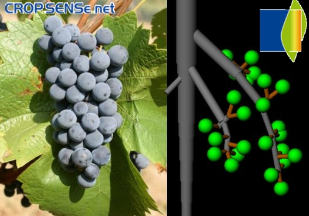 | Derivation of 3D Plant Architectures - a sub-project of CROP.SENSe.net
Funding:
German Ministry of Education and Research (BMBF)
within the scope of the competitive grants program Networks of excellence in agricultural and
nutrition research (Funding code: 0315529) and from the
European Union
Funds for regional development (Funding code: z1011bc001a), 2010 - 2014
Aim: Multi-scale structural 3D plant reconstruction in vinegrowing
Role: Principal investigator of the modeling subgroup: interpretation of sensor data, pattern
recognition, classification
Methods: Procedural modeling, L-Systems, relational growth grammars, CSG, probabilistic sampling
Partners:
Julius Kühn Institute of grapevine Breeding, Siebeldingen (Prof. Dr. R. Töpfer),
Institute of Geodesy and Geoinformation, Bonn Univ. (Prof. Dr. W. Förstner, Prof. Dr. H. Kuhlmann),
Faculty of Informatics, Techn. Univ. Munich (Prof. Dr. D. Cremers).
The project is part of Crop.Sense.net,
an agronomic competence network for networking sensor technology R&D for crop breeding and management
|
| 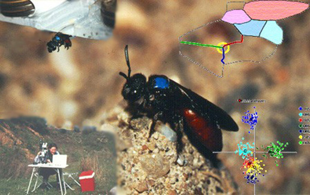 | ABIS: Automated Bee Identification System
Funding: German Research Council (DFG), 1996 - 2001,
German Ministry of Education and Research (BMBF) 2000 - 2003
Aim: Automated identification of bee species by image analysis of their wings
Role: Principal investigator of the computer science group: image processing, pattern
recognition, classification, geo-referencing, visualization
Methods: Geometrical image analysis, template matching, affine projection,
discriminant analysis, kernel functions, GIS
Partners: Institute of Agricultural Zoology and Bee Keeping, Prof. Dr. W. Drescher,
Prof. Dr. D. Wittman, Dr. S. Schröder: Taxonomical Research, Identification
of Training Data, Zoological Evaluation
|
| 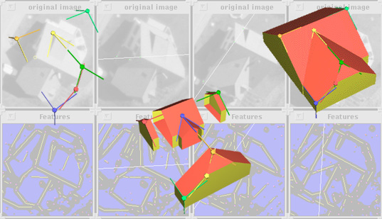 | SMB: Automated 3D Reconstruction of Buildings from Digital Images
Funding: German Research Council (DFG), 1995 - 2000
Aim: Fully automated reconstruction of buildings from digital images
Role: Principal investigator of the modeling subgroup: modeling in 3D and 2D, model aggretation in 3D,
visualization, animation
Methods: Hybrid Modeling (CSG/B-Rep), Aspect Graphs, Shape Grammars, Tecture Mapping
Partners: Department of Computer Science III, Prof. Cremers, Dr. Plümer:
Validation by Constraint Logic Programming,
Institute of Photogrammetry, Prof. Förstner: Image Processing, Pattern
Recognition, Reconstruction of Building Corners
The project was part of the bundle project
Semantic Modeling and Extraction of Spatial Objects from Images and Maps
|
| 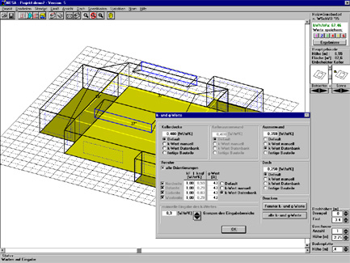 | NESA: Low-Energy Solar Architecture
Funding: 1995 - 1996 by the Ministry of Economy and Energy of the State North Rhine-Westphalia
Aim: Computer Aided Desing and Evaluation of Low-Energy-Solar-Architecture
Role: Principal investigator of the modeling group: modeling in 3D and 2D, user interface,
visualization, animation
Principle: Computer-Aided 3D-Construction of Low Energy Buildings
Methods: Boundary Representation (B-Rep), User Interface, Visualization
Partners: Buero of Low Energy Building Construction, Dipl.-Ing. A. Lohr,
Department of Computer Science III, Prof. Cremers:
Modeling and User Interface of Roof Construction
|